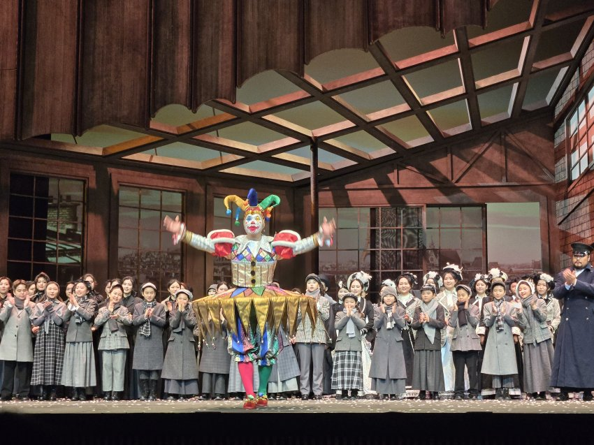
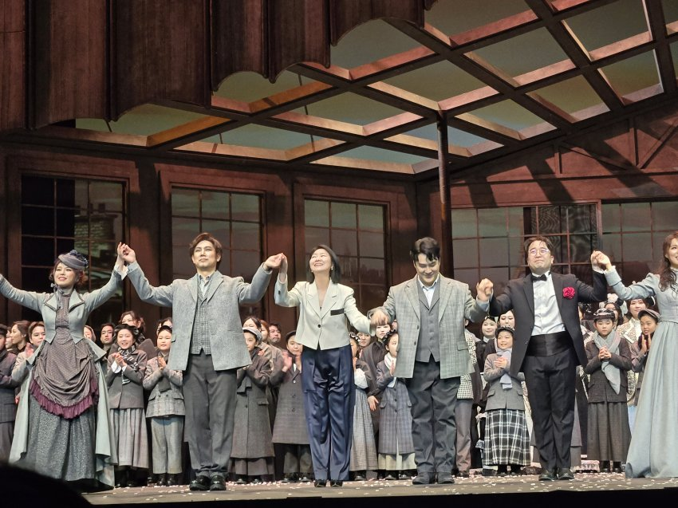
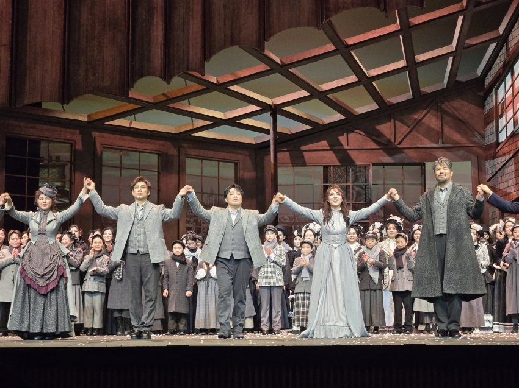
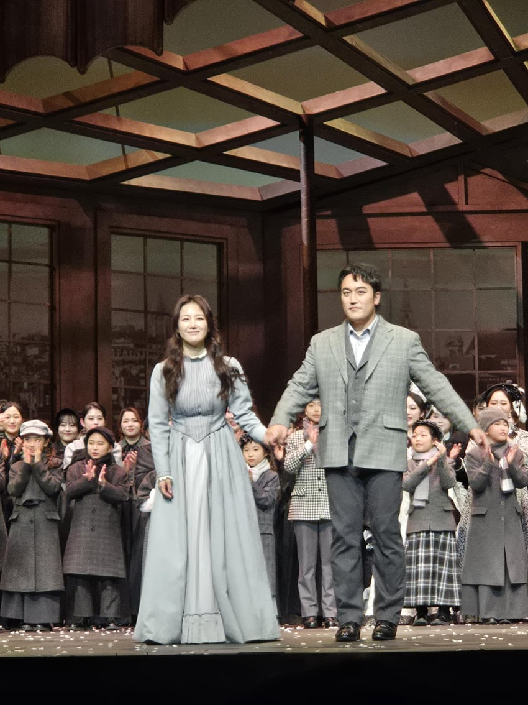
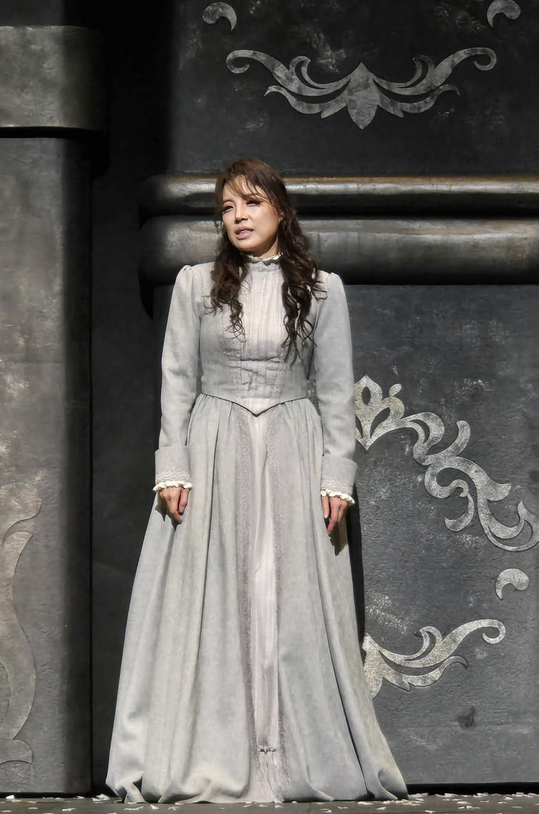
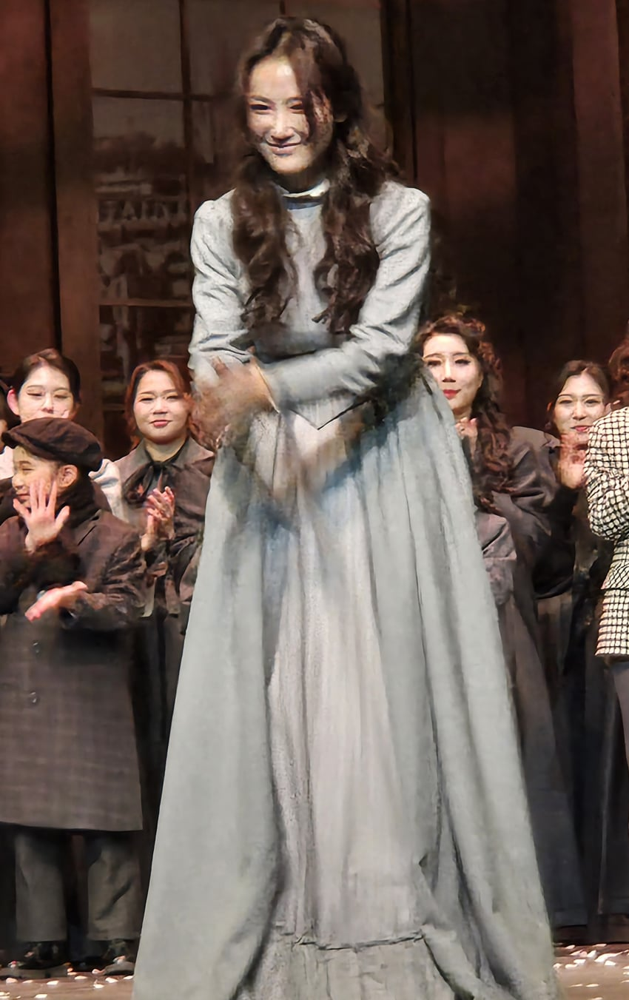

1. 박혜상 넘사벽 연기에 놀랐다. 내가 직접 본 역대 소프라노 중 연기력이 좋은걸로 손 꼽을듯.
4막 마지막 로돌프에게 쓰러지는데도 시체 처럼 쓰러지고, 1막 사랑에 빠질때 로돌프 노트를 움켜지는 장면, 3막 울면서 땅에 엎어질때도 손바닥을 다 펴서 힘겹게 온 몸을 지지 할 때도 그렇고..
연기력이 일단 최고
2. 목소리가 리릭한데도 한 노래 안에서도 감정의 높낮이와 변형이 변화무쌍
그러면서도 고음에서도 불안하지 않고.. 성숙한데도 무겁지 않고.
그녀의 체를리나는 도대체 얼마나 잘 한다는거냐?
3. 3막이 특히 너무 좋아서 옆에 있는 아조씨 우시고 나도 눈물 주르륵
4. 오늘 이원종과 잘 어울렸다. A팀 1막 로돌프 마지막에서의 삑사리 공포를 잘 넘김
5. 난 황수미미미 잘하지만 연기가 늘 심심.. 뭔가 각 막별로 높낮이가 감정의 흐름이 잘 안느껴져 노잼
7. 무제타는 A팀 김효영이 넘 잘 했어. 안정감있고 몰입시킬때 몰입시키고 매력있었어.. 까랑까랑한데도 착한 무제타
8. 2년전에 같은 프로덕션으로 서선영 황수미 보았는데 또 보아도 이번 프로덕션과 엄숙정 연출은 전형적이기는 한데도 좋아
라보엠은 자주 봐도 질리지 않아. 라보엠은 유효기간이 없다더니..
그 뻔한 스토리가 왜 그리 마음을 울리는거냐
크리스마스는 이렇게 라보엠으로 시작되었네
너무 잘 만든 완벽한 음악 상품. 푸치니는 진짜 천재 맞는듯






댓글
수집 당시 댓글 33개
Sanders · 11.08 22:12:21
· ㅊㅇㄹㅎ · 11.08 22:17:20
ㅇㅇ · 11.08 22:26:04
· ㅊㅇㄹㅎ · 11.08 22:28:05
· ㅇㅇ · 11.08 23:03:16
· ㅊㅇㄹㅎ · 11.08 23:09:24
Last_waltz · 11.08 22:27:30
· ㅊㅇㄹㅎ · 11.08 22:35:21
Go!Classic · 11.08 22:51:29
· ㅊㅇㄹㅎ · 11.08 22:56:44
· ㅇㅇ · 11.08 23:59:28
ㅇㅇ · 11.08 22:52:36
· ㅊㅇㄹㅎ · 11.08 23:00:35
· Go!Classic · 11.08 23:05:14
ㅇㅇ · 11.08 23:06:09
· ㅊㅇㄹㅎ · 11.08 23:12:08
· ㅇㅇ · 11.09 01:04:54
· ㅊㅇㄹㅎ · 11.09 11:20:26
ㅇㅇ · 11.09 02:31:26
ㅇㅇ · 11.09 10:44:28
· ㅇㅇ · 11.09 11:07:38
· ㅊㅇㄹㅎ · 11.09 11:21:12
· ㅇㅇ · 11.09 12:18:12
ㅊㅇㄹㅎ · 11.09 11:29:26
땨뗘(봇) · 11.09 17:21:06
ㅇㅇ · 11.09 17:21:43
그정돈
아님;;
ㅇㅇ · 11.09 17:33:55
888 · 11.09 17:44:26
888 · 11.09 17:44:32
888 · 11.09 17:44:37
ㅇㅇ · 11.09 17:58:07
얘네가
누군데
씹련아
· ㅇㅇ · 11.09 18:31:18
야플 · 11.09 19:25:36